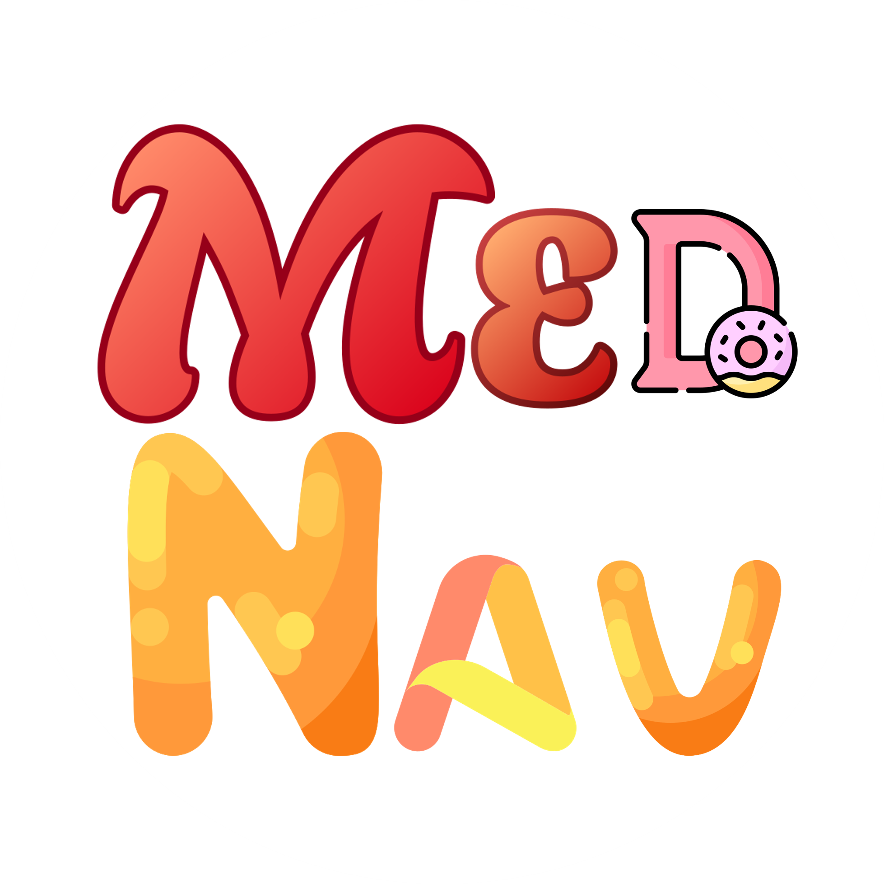

Mednav2
Home
About
mission
Team
Personal
海医人
学习
教学pdfs
科研pdfs
Tools
timer
venn
merge
ID
生信通用工具
Bioinformatics Tools
各种预测
prediciton
转录组
datasets
Analysis platform
Methodology flow
expression
Enrichment analysis
PPI
Survival analysis
非编码RNA
Single-cell
Spatial trans
网络药毒理学
pharmacology
net Toxicology
其他分析
Proteome
Metabolome
other
论文课题
paper-relations
Research Project
Patents
教育教学
Teaching
在线习题
血液学一般检查
骨髓实验室检查
止血凝血检查
粪便检查
尿液检查
肝功能检查
肾功能检查
脑脊液浆膜腔
生殖系统
临床生化
免疫学检查
病原微生物
多选
简答
骨髓图库
小工具
smallTools
Relax
In leisure
medTV
Contact